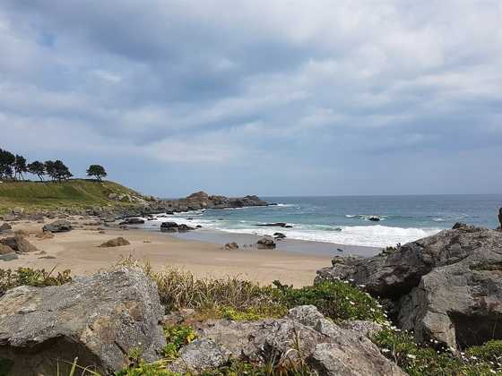
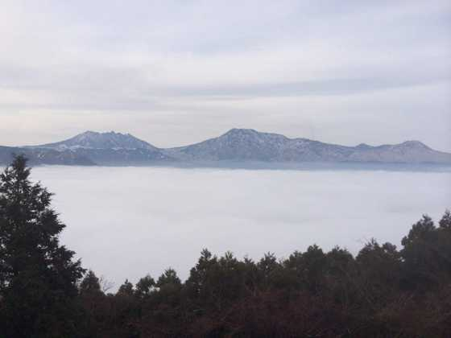
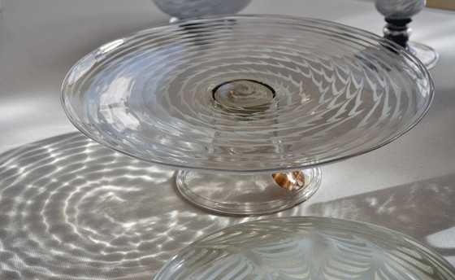
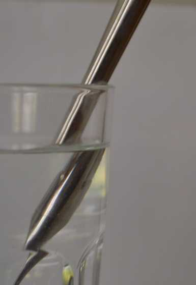
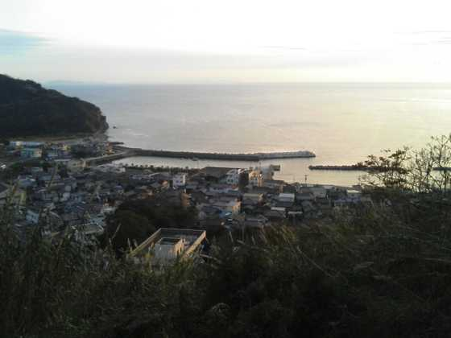
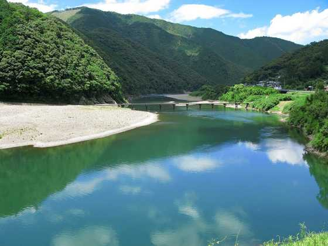
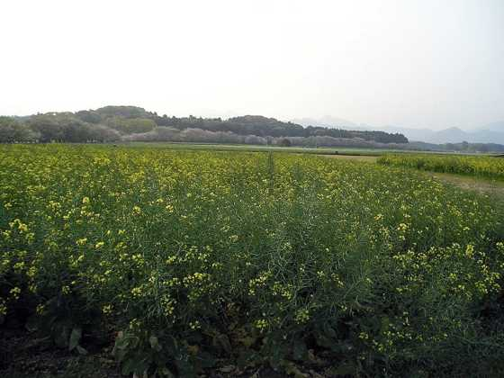

カフェ ニジノフネ
海を望むテラスで、ガラスの光と甘いひとときを。
掲載している写真はフリー素材のイメージです。店舗の実際の様子ではなく、他の地域で撮影されたものを含みます。
お店の由来・想い
カフェ ニジノフネは、熊本県天草市五和町御領にある、ガラス工房「カリヒロ」に併設された海辺のカフェです。ガラス張りの入口の先には、グラスやキーホルダーなどの雑貨が並び、ものづくりのぬくもりを感じる落ち着いた空間が広がっていると紹介されています。
Instagramでは「天草の海が見えるカフェ。ゆったりとした時間をお過ごしください。」と紹介されています。海を一望できるテラス席があり、天気のよい日は風を感じながら景色を楽しめます。
店名「ニジノフネ」の由来は、確認できていません。このページでは断定せず、光を通すガラスと海辺の景色にちなんだ、虹色の舟に乗るようなひとときを「制作側のイメージ」としてコンセプトにしています。

メニュー
確認できている提供内容は次のとおりです。価格・詳細は準備中です。
- 手作りケーキ(ドリンクとのセットが楽しめると紹介されています)
- ロコモコ(金・土・日の限定、スープ付きと紹介されています)
準備中価格・ドリンクの内容・最新の提供状況はお問い合わせください。


ガラスの光、海辺の景色
ガラス工房のそばで過ごす時間を、光と水、窓辺の景色のイメージでお届けします。






口コミ(イメージ例)
イメージ例
テラス席から海を眺めながら、ケーキをいただきました。ゆっくり過ごせる時間がうれしかったです。
イメージ例
ガラスの雑貨を眺めてからお茶をする、というのが楽しみになりました。気持ちが落ち着きます。
イメージ例
ドライブの途中に立ち寄りました。景色がよく、のんびりできる場所でした。
※上記は創作のイメージ例であり、実際のお客様の声ではありません。
アクセス・ご案内
- 住所
- 〒863-2201 熊本県天草市五和町御領6850-1
- 電話
- 準備中
- 営業時間
- 準備中
- 定休日
- 準備中
- @cafe_nijinofune